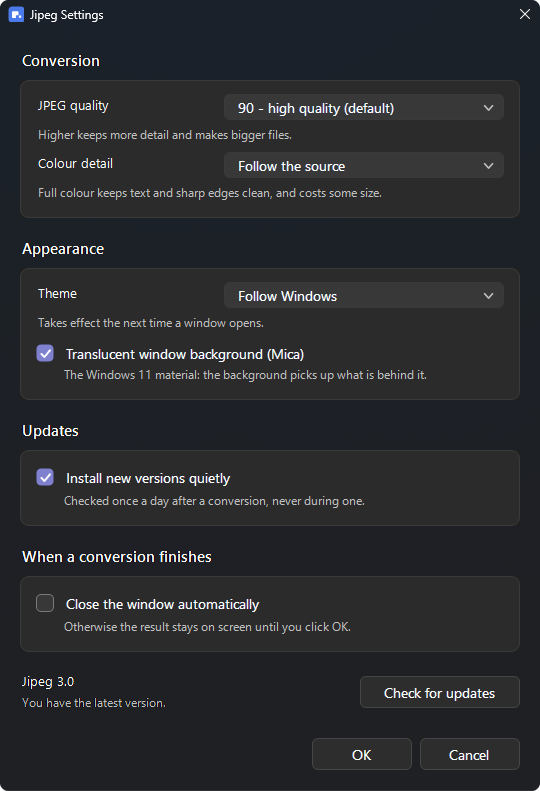

Right-click an image.
It comes back lighter.
One entry in the right-click menu, encoding with Google's jpegli. It never gives back a file heavier than the one you handed it, and it carries nothing over: no Exif, no GPS, no colour profile.
irm https://raw.githubusercontent.com/da0t-exe/Jipeg/main/install.ps1 | iex
Checked against the SHA-256 GitHub publishes for the release.
It comes off the same way, with uninstall.ps1.
Needs cjpegli, and uses oxipng and dwebp when they are
there: apt install libjxl-tools oxipng webp. Experimental, and never run by its author.
Needs cjpegli, and uses oxipng and dwebp when they are
there: brew install jpeg-xl oxipng webp. Experimental, and never run by its author.
On real files
| what you give it | before | after | |
|---|---|---|---|
| a photograph | 630 KB | 66 KB | −90% |
| a scanned document | 10 KB | 3 KB | −68% |
| a transparent logo | 1.1 KB | 0.4 KB | −62% |
| a diagram | 3.9 KB | 1.7 KB | −57% |
| a screenshot | 36 KB | 26 KB | −29% |
| a JPEG already small | 40 KB | — | untouched |
Three things it will not do
Give you back something heavier
JPEG is very good at photographs and very bad at flat colour and text. A screenshot grew 88% here, an icon 448%. Those are not written at all — the lighter file was already on your disk.
Flatten transparency onto white
JPEG has no alpha channel, so a PNG with transparent pixels is shrunk as a PNG instead, losslessly: pixels and alpha come back byte for byte identical.
Keep what came with the file
The rotation a phone asks for is applied to the pixels and then thrown away with everything else, so the picture is upright everywhere and cannot say where it was taken.
The whole interface


Linux and macOS
Tested on one machine
Twenty behaviours are checked on every change, and the window's geometry is measured rather than looked at — but all of it on one Windows 11 machine, at 100% scaling. HEIC and AVIF have never actually been decoded here, the display scaling is only simulated, and the Linux and macOS port has never been run at all. The two bugs that mattered most were found by somebody else running it.